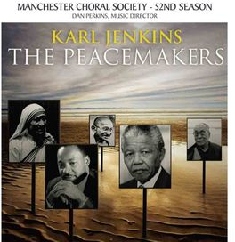
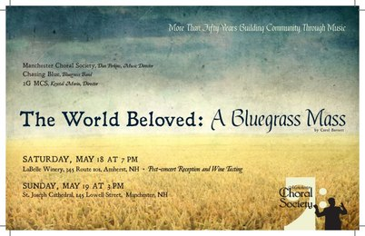

December 2012: A Christmas Tapestry
Dan Perkins, music director
Bogoróditse Djévo — Arvo Pärt
Sleep — Eric Whitacre
Greensleeves — Bob Chilcott
The Peacemakers — Karl Jenkins
Krystal Morin, soprano
Eva Gruesser, violin
Christmas Carol Sing — David Ott
In collaboration with 2GMCS and Nashua High School South Concert Choir
May 2013
The World Beloved: A Bluegrass Mass — Carol Barnett
Krystal Morin, soprano
Kendra Treadwell, mezzo-soprano
Mike Lymburner, tenor
Derrick Landano, tenor
Song for Mother Earth — Native American Chants, arr. Lana Walter
Camryn Anderson, soprano
Renee Champagne, rattle drum
The Crawdad Song — arr. Cristi Cary Miller
In the Valley of Our Dreams — Hank Keene
Songs of the Wayfarer — arr. Joseph Martin
Hard Times Come Again No More — Stephen Foster, arr. Mark Keller
hope, faith, life, love — Eric Whitacre
i thank You God for most this amazing day — Eric Whitacre
The Water is Wide — arr. Luigi Zaninelli
Cindy — arr. Carol Barnett
Light of a Clear Blue Morning — Dolly Parton, arr. Craig Hella Johnson
Krystal Morin, Kendra Treadwell, Kate Worden, Kaitlin Donovan, Elizabeth Sheil — soloists
Bile Them Cabbage Down — arr. Mack Wilberg
Mike Lymburner and Peter C. Henninger-Osgood — soloists
In collaboration with 2GMCS and Chasing Blue